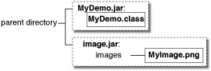
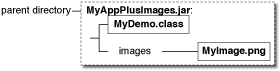
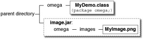
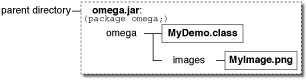

Lesson: Using Swing Components
How to Use Icons
Many Swing components, such as labels, buttons, and tabbed panes, can be decorated with an icon — a fixed-sized picture. An icon is an object that adheres to the
Icon interface. Swing provides a particularly useful implementation of the Icon interface:
ImageIcon, which paints an icon from a GIF, JPEG, or PNG image.
Here's a snapshot of an application with three labels, two decorated with an icon:

The program uses one image icon to contain and paint the yellow splats. One statement creates the image icon and two more statements include the image icon on each of the two labels:
ImageIcon icon = createImageIcon("images/middle.gif",
"a pretty but meaningless splat");
label1 = new JLabel("Image and Text", icon, JLabel.CENTER);
...
label3 = new JLabel(icon);
The createImageIcon method (used in the preceding snippet) is one we use in many of our code samples. It finds the specified file and returns an ImageIcon for that file, or null if that file couldn't be found. Here is a typical implementation:
/** Returns an ImageIcon, or null if the path was invalid. */
protected ImageIcon createImageIcon(String path,
String description) {
java.net.URL imgURL = getClass().getResource(path);
if (imgURL != null) {
return new ImageIcon(imgURL, description);
} else {
System.err.println("Couldn't find file: " + path);
return null;
}
}
In the preceding snippet, the first argument to the ImageIcon constructor is relative to the location of the current class, and will be resolved to an absolute URL. The description argument is a string that allows assistive technologies to help a visually impaired user understand what information the icon conveys.
Generally, applications provide their own set of images used as part of the application, as is the case with the images used by many of our demos. You should use the Class getResource method to obtain the path to the image. This allows the application to verify that the image is available and to provide sensible error handling if it is not. When the image is not part of the application, getResource should not be used and the ImageIcon constructor is used directly. For example:
ImageIcon icon = new ImageIcon("images/middle.gif",
"a pretty but meaningless splat");
When you specify a filename or URL to an ImageIcon constructor, processing is blocked until after the image data is completely loaded or the data location has proven to be invalid. If the data location is invalid (but non-null), an ImageIcon is still successfully created; it just has no size and, therefore, paints nothing. As shown in the createImageIcon method, it is advisable to first verify that the URL points to an existing file before passing it to the ImageIcon constructor. This allows graceful error handling when the file isn't present. If you want more information while the image is loading, you can register an observer on an image icon by calling its setImageObserver method.
Under the covers, each image icon uses an
Image object to hold the image data.
The rest of this section covers the following topics:
- A More Complex Image Icon Example
- Loading Images Using getResource
- Loading Images Into Applets
- Improving Perceived Performance When Loading Image Icons
- Creating a Custom Icon Implementation
- The Image Icon API
- Examples that Use Icons
A More Complex Image Icon Example
Here's an application that uses six image icons. Five of them display thumbnail images and the sixth diplays the full size the photograph.
Try this:
-
Click the Launch button to run IconDemo using Java™ Web Start (download JDK 7 or later). Or, to compile and run the example yourself, consult the example index.

-
Click any of the thumbnail images to view the full size photographs.
- Hold the mouse over a photograph. A tool tip appears that displays the photograph caption.
IconDemoApp demonstrates icons used in the following ways:
- As a GUI element attached to a button (the thumbnail images on the buttons).
- To display an image (the five photographs).
The photographs are loaded in a separate thread by loadimages.execute. The loadimages code is shown a little later in this section.
The ThumbnailAction class, an inner class in
IconDemoApp.java, is a descendant of AbstractAction that manages our full size image icon, a thumbnail version, and its description. When the actionPerformed method is called the full size image is loaded into the main display area. Each button has its own instance of ThumbnailAction which specifies a different image to show.
/**
* Action class that shows the image specified in it's constructor.
*/
private class ThumbnailAction extends AbstractAction{
/**
*The icon if the full image we want to display.
*/
private Icon displayPhoto;
/**
* @param Icon - The full size photo to show in the button.
* @param Icon - The thumbnail to show in the button.
* @param String - The descriptioon of the icon.
*/
public ThumbnailAction(Icon photo, Icon thumb, String desc){
displayPhoto = photo;
// The short description becomes the tooltip of a button.
putValue(SHORT_DESCRIPTION, desc);
// The LARGE_ICON_KEY is actually the key for setting the
// icon when an Action is applied to a button.
putValue(LARGE_ICON_KEY, thumb);
}
/**
* Shows the full image in the main area and sets the application title.
*/
public void actionPerformed(ActionEvent e) {
photographLabel.setIcon(displayPhoto);
setTitle("Icon Demo: " + getValue(SHORT_DESCRIPTION).toString());
}
}
Loading Images Using getResource
Most often, an image icon's data comes from an image file. There are a number of valid ways that your application's class and image files may be configured on your file server. You might have your class files in a JAR file, or your image files in a JAR file; they might be in the same JAR file, or they might be in different JAR files. The following figures illustrate a few of the ways these files can be configured:
| Class file next to an image directory containing the image file, in PNG format. | Class file in same directory as JAR file. The JAR file was created with all the images in an images directory. |
|  |  |
| Class file in one JAR file and the images in another JAR file. | Class and image files in same JAR file. |
If you are writing a real-world application, it is likely (and recommended) that you put your files into a package. For more information on packages, see Creating and Using Packages in the Learning the Java Language trail. Here are some possible configurations using a package named "omega":
|  | |
Class file in directory named omega. Image in omega/images directory. |
Class file in omega directory. Image in JAR file not inside of omega directory, but created with omega/images hierarchy. |
|  | |
One big JAR file with class files under omega directory and image files under omega/images directory. |
All seven configurations shown are valid, and the same code reads the image:
java.net.URL imageURL = myDemo.class.getResource("images/myImage.gif");
...
if (imageURL != null) {
ImageIcon icon = new ImageIcon(imageURL);
}
The getResource method causes the class loader to look through the directories and JAR files in the program's class path, returning a URL as soon as it finds the desired file. In the example the MyDemo program attempts to load the images/myImage.png file from the omega class. The class loader looks through the directories and JAR files in the program's class path for /omega/images/myImage.png. If the class loader finds the file, it returns the URL of the JAR file or directory that contained the file. If another JAR file or directory in the class path contains the images/myImage.png file, the class loader returns the first instance that contains the file.
Here are three ways to specify the class path:
-
Using the
-cpor-classpathcommand-line argument. For example, in the case where the images are in a JAR file namedimages.jarand the class file is in the current directory:java -cp .;images.jar MyDemo [Microsoft Windows] java -cp ".;images.jar" MyDemo [UNIX-emulating shell on Microsoft Windows — you must quote the path] java -cp .:images.jar MyDemo [UNIX]If your image and class files are in separate JAR files, your command line will look something like:
java -cp .;MyDemo.jar;images.jar MyDemo [Microsoft Windows]
In the situation where all the files are in one JAR file, you can use either of the following commands:
java -jar MyAppPlusImages.jar java -cp .;MyAppPlusImages.jar MyApp [Microsoft Windows]
For more information, see the JAR Files trail.
-
In the program's JNLP file (used by Java Web Start). For example, here is the JNLP file used by
DragPictureDemo:<?xml version="1.0" encoding="utf-8"?> <!-- JNLP File for DragPictureDemo --> <jnlp spec="1.0+" codebase="https://docs.oracle.com/javase/tutorialJWS/src/uiswing/misc/examples" href="DragPictureDemo.jnlp"> <information> <title>DragPictureDemo</title> <vendor>The Java(tm) Tutorial: Sun Microsystems, Inc.</vendor> <homepage href="https://docs.oracle.com/javase/tutorial/uiswing/misc/examples/index.html#DragPictureDemo"/> <description>DragPictureDemo</description> <description kind="short">A demo showing how to install data transfer on a custom component.</description> <offline-allowed/> </information> <resources> <j2se version="1.6+"/> <jar href="allClasses.jar"/> <jar href="images.jar"/> </resources> <application-desc main-class="DragPictureDemo"/> </jnlp>In this example, the class files and the images files are in separate JAR files. The JAR files are specified using the XML
jartag. -
Setting the
CLASSPATHenvironment variable. This last approach is not recommended. IfCLASSPATHis not set, the current directory (".") followed by the location of the system classes shipped with the JRE are used by default.
Most of the Swing Tutorial examples put the images in an images directory under the directory that contains the examples' class files. When we create JAR files for the examples, we keep the same relative locations, although often we put the class files in a different JAR file than the image JAR file. No matter where the class and image files are in the file system — in one JAR file, or in multiple JAR files, in a named package, or in the default package — the same code finds the image files using getResource.
For more information, see Accessing Resources in a Location-Independent Manner and the Application Development Considerations.
Loading Images Into Applets
Applets generally load image data from the computer that served up the applet. The APPLET tag is where you specify information about the images used in the applet. For more information on the APPLET tag see
Using the APPLET Tag
Improving Perceived Performance When Loading Image Icons
Because the photograph images can be slow to access,
IconDemoApp.java uses a SwingWorker to improve the performance of the program as perceived by the user.
Background image loading — the program uses a
javax.swing.SwingWorker object to load each photograph image and compute it's thumbnail in a background thread. Using a SwingWorker prevents the program from appearing to freeze up while loading and scaling the images.
Here's the code to process each image:
/**
* SwingWorker class that loads the images a background thread and calls publish
* when a new one is ready to be displayed.
*
* We use Void as the first SwingWorker param as we do not need to return
* anything from doInBackground().
*/
private SwingWorker<Void, ThumbnailAction> loadimages = new SwingWorker<Void, ThumbnailAction>() {
/**
* Creates full size and thumbnail versions of the target image files.
*/
@Override
protected Void doInBackground() throws Exception {
for (int i = 0; i < imageCaptions.length; i++) {
ImageIcon icon;
icon = createImageIcon(imagedir + imageFileNames[i], imageCaptions[i]);
ThumbnailAction thumbAction;
if(icon != null){
ImageIcon thumbnailIcon = new
ImageIcon(getScaledImage(icon.getImage(), 32, 32));
thumbAction = new ThumbnailAction(icon, thumbnailIcon, imageCaptions[i]);
} else {
// the image failed to load for some reason
// so load a placeholder instead
thumbAction = new ThumbnailAction(placeholderIcon, placeholderIcon, imageCaptions[i]);
}
publish(thumbAction);
}
// unfortunately we must return something, and only null is valid to
// return when the return type is void.
return null;
}
/**
* Process all loaded images.
*/
@Override
protected void process(List<ThumbnailAction> chunks) {
for (ThumbnailAction thumbAction : chunks) {
JButton thumbButton = new JButton(thumbAction);
// add the new button BEFORE the last glue
// this centers the buttons in the toolbar
buttonBar.add(thumbButton, buttonBar.getComponentCount() - 1);
}
}
};
SwingWorker invokes the doInBackground method in a background thread. The method places a full size image, thumbnail size image and caption into a ThumbnailAction object. The SwingWorker then delivers the ThumbnailAction to the process method. The process method executes on the event dispatch thread and updates the GUI by adding a button to the toolbar. JButton has a constructor that takes an action object. The action object determines a number of the button's properties. In our case the button icon, the caption and the action to be performed when the button is pressed is all determined by the ThumbnailAction.
Overhead — this program eventually loads all the source images into memory. This may not be desirable in all situations. Loading a number of very large files could cause the program to allocate a very large amount or memory. Care should be taken to manage the number and size of images that are loaded.
As with all performance-related issues, this technique is applicable in some situations and not others. Also the technique described here is designed to improve the program's perceived performance, but does not necessarily impact its real performance.
Creating a Custom Icon Implementation
The createImageIcon method returns null when it cannot find an image, but what should the program do then? One possibility would be to ignore that image and move on. Another option would be to provide some sort of default icon to display when the real one cannot be loaded. Making another call to createImageIcon might result in another null so using that is not a good idea. Instead lets create a custom Icon implementation.
You can find the implementation of the custom icon class in
MissingIcon.java. Here are the interesting parts of its code:
/**
* The "missing icon" is a white box with a black border and a red x.
* It's used to display something when there are issues loading an
* icon from an external location.
*
* @author Collin Fagan
*/
public class MissingIcon implements Icon{
private int width = 32;
private int height = 32;
private BasicStroke stroke = new BasicStroke(4);
public void paintIcon(Component c, Graphics g, int x, int y) {
Graphics2D g2d = (Graphics2D) g.create();
g2d.setColor(Color.WHITE);
g2d.fillRect(x +1 ,y + 1,width -2 ,height -2);
g2d.setColor(Color.BLACK);
g2d.drawRect(x +1 ,y + 1,width -2 ,height -2);
g2d.setColor(Color.RED);
g2d.setStroke(stroke);
g2d.drawLine(x +10, y + 10, x + width -10, y + height -10);
g2d.drawLine(x +10, y + height -10, x + width -10, y + 10);
g2d.dispose();
}
public int getIconWidth() {
return width;
}
public int getIconHeight() {
return height;
}
}
The paintIcon method is passed a Graphics object. The Graphics object gives the paintIcon method access to the entire Java2D API. For more information about painting and Java2D, see
Performing Custom Painting.
The following code demonstrates how the MissingIcon class is used in the SwingWorker doInBackground method.
private MissingIcon placeholderIcon = new MissingIcon();
...
if(icon != null) {
...
} else {
// the image failed to load for some reason
// so load a placeholder instead
thumbAction = new ThumbnailAction(placeholderIcon, placeholderIcon, imageCaptions[i]);
}
Using a custom icon has a few implications:
-
Because the icon's appearance is determined dynamically, the icon painting code can use any information — component and application state, for example — to determine what to paint.
- Depending on the platform and the type of image, you may get a performance boost with custom icons, since painting simple shapes can sometimes be faster than copying images.
-
Because
MissingIcondoes not do any file I/O there is no need for separate threads to load the image.
The Image Icon API
The following tables list the commonly used ImageIcon constructors and methods. Note that ImageIcon is not a descendent of JComponent or even of Component.
The API for using image icons falls into these categories:
- Setting, Getting, and Painting the Image Icon's Image
- Setting or Getting Information about the Image Icon
- Watching the Image Icon's Image Load
| Method or Constructor | Purpose |
|---|---|
|
ImageIcon() ImageIcon(byte[]) ImageIcon(byte[], String) ImageIcon(Image) ImageIcon(Image, String) ImageIcon(String) ImageIcon(String, String) ImageIcon(URL) ImageIcon(URL, String) |
Create an ImageIcon instance, initializing it to contain the specified image. The first argument indicates the source — image, byte array, filename, or URL — from which the image icon's image should be loaded. The source must be in a format supported by the java.awt.Image class: namely GIF, JPEG, or PNG. The second argument, when present, provides a description for the image. The description may also be set via setDescription and provides useful textual information for assistive technologies. |
|
void setImage(Image) Image getImage() |
Set or get the image displayed by the image icon. |
| void paintIcon(Component, Graphics, int, int) | Paint the image icon's image in the specified graphics context. You would override this only if you're implementing a custom icon that performs its own painting. The Component object is used as an image observer. You can rely on the default behavior provided by Component class, and pass in any component. The two int arguments specify the top-left corner where the icon is painted. |
|
URL getResource(String) in (java.lang.ClassLoader) |
Find the resource with the given name. For more information, see Loading Images Using getResource. |
|
InputStream getResourceAsStream(String) in (java.lang.ClassLoader) |
Find the resource with the given name and return an input stream for reading the resource. For more information, see the Loading Images Into Applets discussion. |
| Method | Purpose |
|---|---|
|
void setDescription(String) String getDescription() |
Set or get a description of the image. This description is intended for use by assistive technologies. |
|
int getIconWidth() int getIconHeight() |
Get the width or height of the image icon in pixels. |
| Method | Purpose |
|---|---|
|
void setImageObserver(ImageObserver) ImageObserver getImageObserver() |
Set or get an image observer for the image icon. |
| int getImageLoadStatus() | Get the loading status of the image icon's image. The values returned by this method are defined by MediaTracker. |
Examples that Use Icons
The following table lists just a few of the many examples that use ImageIcon.
| Example | Where Described | Notes |
|---|---|---|
LabelDemo |
This section and How to Use Labels |
Demonstrates using icons in an application's label, with and without accompanying text. |
IconDemo |
This section | Uses a label to show large images; uses buttons that have both images and text. |
CustomIconDemo |
This section | Uses a custom icon class implemented by
ArrowIcon.java. |
TumbleItem |
How to Make Applets | An applet. Uses image icons in an animation. Shows how to call ImageIcon's paintIcon method. |
ButtonDemo |
How to Use Buttons, Check Boxes, and Radio Buttons | Shows how to use icons in an application's buttons. |
CheckBoxDemo |
How to Use Check Boxes | Uses multiple GIF images. |
TabbedPaneDemo |
How to Use Tabbed Panes | Demonstrates adding icons to tabs in a tabbed pane. |
DialogDemo |
How to Make Dialogs | Shows how to use standard icons in dialogs. |
TreeIconDemo |
How to Use Trees | Shows how to change the icons displayed by a tree's nodes. |
ActionDemo |
How to Use Actions | Shows how to specify the icon in a tool-bar button or menu item using an Action. |
FileChooserDemo2 |
How to Use File Choosers | Uses a PNG image. Shows how to implement an image previewer and an image filter in a file chooser. |
Note: The photographs used in the
IconDemo are copyright ©2006
spriggs.net and licenced under a
Creative Commons Licence.